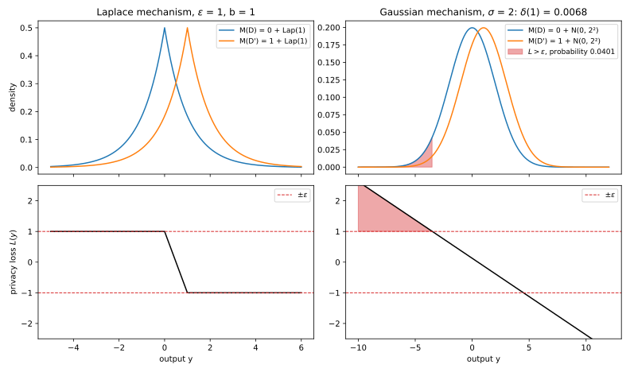
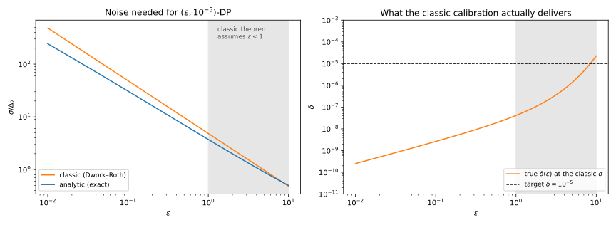

20 The Laplace and Gaussian mechanisms
20.1 Why this matters
You run a hospital database and want to publish how many patients have diabetes, the average age of a cohort, or a histogram of diagnoses, with a differential privacy (DP) guarantee. The definition of differential privacy says what the release must satisfy: changing one person’s record must barely change the distribution of what you publish. It does not say how to build such a release. The two mechanisms of this chapter are the answer used almost everywhere. The idea is to compute the exact answer, call it \(f(D)\) for the dataset \(D\), and then blur it with random noise \(Z\) drawn fresh each time, so that what you publish is \[M(D) = f(D) + Z. \tag{20.1}\] If the noise is wide compared with how far one person can move the answer, an observer cannot tell from the output whether that person was there.
Three questions decide everything. The first is how much one record can move the answer. That is the sensitivity of \(f\), and it sets the scale of the noise. The second is which noise distribution to use. Laplace noise gives pure \(\varepsilon\)-DP. Gaussian noise gives only \((\varepsilon, \delta)\)-DP, but it scales better when many numbers are released at once. The third is how much noise exactly. For Laplace noise the answer is a one-line formula. For Gaussian noise the textbook formula is loose, and the exact answer comes from solving one equation numerically.
Every later mechanism that adds noise, from the private mean to the noisy gradients of private model training in a later part, is calibrated with the tools of this chapter.
20.1.1 The one idea: privacy loss of additive noise is a shifted-copy log-ratio
Differential privacy is a bound on how much an output can favour one dataset over a neighbouring one. That is measured by the privacy loss: for an output \(y\), the log of how much more likely \(y\) is when the data are \(D\) than when they are \(D'\), \[L_{D,D'}(y) = \ln\frac{p_{M(D)}(y)}{p_{M(D')}(y)}, \tag{20.2}\] where \(p_{M(D)}\) is the density of the published output on dataset \(D\). A loss of 0 means the output is equally likely under both datasets and says nothing about which one was used; a loss of \(\varepsilon\) means it is \(e^\varepsilon\) times more likely under \(D\).
For additive noise this quantity has a simple shape. On neighbouring datasets \(D \simeq D'\) (two datasets that differ in one person’s record) the mechanism outputs \(f(D) + Z\) and \(f(D') + Z\): the same noise placed around two different centres. So the density of \(M(D')\) is the density of \(M(D)\) slid over by \(f(D') - f(D)\), and the privacy loss is the log-ratio of the noise density and a copy of itself shifted by that amount. Probability distributions computed this log-ratio for the two noise densities of this chapter, and the two answers are what everything else rests on. For the Laplace density, whose log falls off like \(-|z|\), the log-ratio is bounded by the shift divided by the scale, whatever \(y\) is. For the normal density, whose log falls off like \(-z^2\), the log-ratio is a straight line in \(y\): unbounded, but large only far in the tail, where outputs are rare. Table 20.1 puts the two side by side for a count, where the shift is 1, so the two centres are 0 and 1.
| Noise | Privacy loss \(L(y)\) for centres 0 and 1 | Largest value | Guarantee |
|---|---|---|---|
| \(\mathrm{Lap}(b)\) | \((\lvert y - 1\rvert - \lvert y\rvert)/b\) | \(1/b\), for every \(y \le 0\) | \(\varepsilon\)-DP with \(\varepsilon = 1/b\) |
| \(\mathcal N(0, \sigma^2)\) | \((1 - 2y)/(2\sigma^2)\) | unbounded as \(y \to -\infty\) | \((\varepsilon, \delta)\)-DP, with \(\delta\) set by the tail where \(L > \varepsilon\) |
Both rows come straight from the densities. The Laplace density with scale \(b\) is \(\frac1{2b}e^{-|z|/b}\), so the log-ratio at \(y\) of the copies centred at 0 and 1 is \((|y - 1| - |y|)/b\); for \(y \le 0\) this is \(((1 - y) - (-y))/b = 1/b\), and it never exceeds that. The normal density with variance \(\sigma^2\) is proportional to \(e^{-z^2/(2\sigma^2)}\), so the log-ratio is \(((y - 1)^2 - y^2)/(2\sigma^2) = (1 - 2y)/(2\sigma^2)\), which grows without limit as \(y\) moves left.
Table 20.2 lists the results of the chapter and where each is used.
| Result | Where it is used |
|---|---|
| \(\ell_1\) and \(\ell_2\) sensitivity of counts, sums, means, histograms | Calibrating every noise-adding mechanism; clipping in Beyond global sensitivity |
| Laplace mechanism: \(\mathrm{Lap}(\Delta_1 f/\varepsilon)\) gives \(\varepsilon\)-DP | Counts, histograms, low-dimensional statistics; report-noisy-max |
| Laplace accuracy: error \(\le (\Delta_1 f/\varepsilon)\ln(d/\beta)\) | Choosing \(\varepsilon\) for a target error |
| Classic Gaussian calibration \(\sigma = \Delta_2 f\sqrt{2\ln(1.25/\delta)}/\varepsilon\) | Reading papers and libraries that still use it |
| Exact \(\delta(\varepsilon)\) of the Gaussian mechanism, analytic calibration | Every Gaussian release; the accountants of Part 4 |
| Laplace against Gaussian in \(d\) dimensions | Choosing the noise for vector-valued queries and gradients |
What you need. The definition of \((\varepsilon, \delta)\)-DP, its hockey-stick form and neighbouring relations are in The definition of differential privacy; post-processing and basic composition are in Post-processing, group privacy and composition. From Part 1: the Laplace and normal distributions and their shifted copies (Probability distributions), their tails (Concentration inequalities), and the hockey-stick divergence with its closed form for two Gaussians (Divergences). Each of these is restated below where it is used.
Notation. \(M\) is a mechanism, \(D \simeq D'\) are neighbouring datasets, and \(f\) is a query with values in \(\mathbb R^d\), a vector of \(d\) numbers. \(\Phi\) is the standard normal cumulative distribution function (CDF): \(\Phi(t)\) is the probability that a standard normal variable is below \(t\). Its density is \(\varphi(t) = e^{-t^2/2}/\sqrt{2\pi}\). Because the normal curve is symmetric about 0, \(\Phi(-t) = 1 - \Phi(t)\).
The guarantee itself says that no event can be much more likely under one dataset than under its neighbour, except for a small slack \(\delta\). Precisely, \(M\) is \((\varepsilon, \delta)\)-DP if for all \(D \simeq D'\) and all events \(S\), \[\Pr[M(D) \in S] \le e^\varepsilon\Pr[M(D') \in S] + \delta. \tag{20.3}\] For one pair of datasets, write \(P\) for the distribution of \(M(D)\) and \(Q\) for that of \(M(D')\). Moving \(e^\varepsilon Q(S)\) to the left, the inequality says that \(\delta\) must be at least \(P(S) - e^\varepsilon Q(S)\) for every event \(S\). So the smallest \(\delta\) that works for this pair is the largest value of that difference over all events, \(\max_S[P(S) - e^\varepsilon Q(S)]\). That maximum has a name: it is the hockey-stick divergence \(E_{e^\varepsilon}(M(D)\|M(D'))\) of Divergences, which in general is \(E_\gamma(P\|Q) = \max_S[P(S) - \gamma Q(S)]\) for \(\gamma \ge 1\). We write \(\delta_M(\varepsilon)\) for the largest of these over all neighbouring pairs, the smallest \(\delta\) that works for the mechanism as a whole at that \(\varepsilon\). As a function of \(\varepsilon\) it is the privacy curve of \(M\).
20.2 Toolkit: three facts every derivation uses
20.2.1 Fact 1 — Additive noise reduces to one shifted pair
When you add noise to an answer, the true answer itself should not matter to privacy, only how far apart the two answers on neighbouring datasets are. Publishing \(1234 + Z\) or \(1235 + Z\) hides the difference between the two datasets exactly as well as publishing \(Z\) or \(1 + Z\), because subtracting 1234 from the output is something anyone can do, and it can be undone.
In symbols, let \(M(D) = f(D) + Z\) where \(Z\) has density \(g\) on \(\mathbb R^d\), and let \(v = f(D') - f(D)\) be the shift between the two answers. Then \[E_\gamma\big(M(D)\|M(D')\big) = E_\gamma\big(Z\|Z + v\big) \quad\text{for every } \gamma \ge 1. \tag{20.4}\]
The proof is that subtracting \(f(D)\) just relabels the outputs. The map \(y \mapsto y - f(D)\) sends \(M(D)\) to \(Z\) and \(M(D')\) to \(Z + v\), and it is a bijection: every output corresponds to exactly one relabelled output, and back. So an event \(S\) about \(M\)’s output is the same as the event \(S - f(D)\) about the relabelled output, with the same probability under each dataset. The hockey-stick divergence is a maximum of \(P(S) - \gamma Q(S)\) over events, and both sides range over the same values, so they are equal. (In the language of Divergences, the data-processing inequality applies in both directions, so no divergence can change.)
For the count above, with \(f(D) = 1234\) and \(f(D') = 1235\), the true value 1234 drops out and only the shift \(v = 1\) remains. This is what makes privacy a property of the noise and of the set of shifts \(v\) that neighbouring datasets can produce, and nothing else. Section 20.3 bounds that set.
20.2.2 Fact 2 — A bounded privacy loss gives pure DP
If no single output can favour one dataset by more than a factor \(e^\varepsilon\), then no event can either, because an event is a collection of outputs and its probability is a sum (or integral) over them. Formally, if \(|L_{D,D'}(y)| \le \varepsilon\) for every output \(y\) and every neighbouring pair, then \(M\) is \(\varepsilon\)-DP, which is \((\varepsilon, \delta)\)-DP with \(\delta = 0\).
The proof is one line. \(L \le \varepsilon\) means \(\ln(p_{M(D)}(y)/p_{M(D')}(y)) \le \varepsilon\), that is, \(p_{M(D)}(y) \le e^\varepsilon p_{M(D')}(y)\) at every \(y\). Integrating both sides over the outputs in \(S\) gives \(\Pr[M(D) \in S] \le e^\varepsilon\Pr[M(D') \in S]\). Only the upper bound \(L \le \varepsilon\) is used here. The definition asks for the inequality in both directions, with \(D\) and \(D'\) swapped, but neighbouring is symmetric, so the bound for the pair \((D', D)\) supplies the other direction. The Laplace mechanism is proved private exactly this way.
20.2.3 Fact 3 — The bad event, and the exact \(\delta\)
Gaussian noise has an unbounded privacy loss, so Fact 2 does not apply. The way around is to look at the outputs where the loss is too large and count how much probability they carry. Call that set the bad event, \(B = \{y : L(y) > \varepsilon\}\): the outputs that favour \(D\) over \(D'\) by more than a factor \(e^\varepsilon\). With \(P = M(D)\) and \(Q = M(D')\), \[E_{e^\varepsilon}(P\|Q) = P(B) - e^\varepsilon Q(B) \le P(B) = \Pr_{y \sim P}[L(y) > \varepsilon]. \tag{20.5}\]
The equality says that the worst event \(S\) in the definition of \(\delta\) is the bad event itself. The reason is the argument of Fact 3 of Divergences: \(P(S) - e^\varepsilon Q(S)\) is the integral over \(S\) of \(p(y) - e^\varepsilon q(y)\). To make that integral as large as possible, include every output where the integrand is positive and no other. The integrand is positive exactly where \(p > e^\varepsilon q\), that is where \(L > \varepsilon\), which is \(B\). The inequality just drops the term \(e^\varepsilon Q(B)\), which is never negative. So the probability of the bad event under \(M(D)\) is always a valid \(\delta\), though usually a loose one.
The same quantity can be written as an average of the privacy loss. Write \((x)_+ = \max(x, 0)\) for the positive part. The hockey-stick is the integral of \((p - e^\varepsilon q)_+\). Factor out \(q\) to get \(q\,(p/q - e^\varepsilon)_+ = q\,(e^L - e^\varepsilon)_+\), or factor out \(p\) to get \(p\,(1 - e^\varepsilon q/p)_+ = p\,(1 - e^{\varepsilon - L})_+\). Integrating, by change of measure, \[E_{e^\varepsilon}(P\|Q) = \mathbb E_Q[(e^L - e^\varepsilon)_+] = \mathbb E_P[(1 - e^{\varepsilon - L})_+]. \tag{20.6}\] The last form needs only samples, or the distribution, of the privacy loss under \(P\), and it is the starting point of Numerical accounting. In this chapter, the inequality of Equation 20.5 is the “bad event” argument behind the classic Gaussian calibration, and the equality is the exact calibration.
20.3 Sensitivity
20.3.1 Context
To hide one record, the noise has to cover the largest change one record can make to the answer. That change is the sensitivity. It depends on the query, on the norm you measure the change in, and on the neighbouring relation (The definition of differential privacy). Under add/remove a neighbour has one record more or less, so the dataset size changes. Under replace one record is swapped for another, so the size \(n\) is fixed and public.
20.3.2 Definition
The sensitivity is the largest distance between the answers on any two neighbouring datasets. For a vector answer you need a way to measure distance, and two are used: the \(\ell_1\) norm \(\|v\|_1 = \sum_i|v_i|\), the total change summed over coordinates, which is what Laplace noise is calibrated to, and the \(\ell_2\) norm \(\|v\|_2 = \sqrt{\sum_iv_i^2}\), the straight-line length, which is what Gaussian noise is calibrated to. The \(\ell_p\) sensitivity of \(f\) is \[\Delta_pf = \max_{D \simeq D'}\big\|f(D) - f(D')\big\|_p, \qquad p \in \{1, 2\}. \tag{20.7}\] The two norms are never far apart, and how far depends on how the change is spread. For every vector \(v \in \mathbb R^d\), \(\|v\|_2 \le \|v\|_1\) (squaring the sum \(\sum|v_i|\) gives every \(v_i^2\) plus non-negative cross terms) and \(\|v\|_1 \le \sqrt d\,\|v\|_2\) (the Cauchy–Schwarz inequality applied to \(\sum_i 1\cdot|v_i|\)). Taking the maximum over neighbours, \[\Delta_2f \le \Delta_1f \le \sqrt d\,\Delta_2f. \tag{20.8}\] The left end is reached when one record moves a single coordinate, the right end when it moves all \(d\) coordinates by the same amount.
20.3.3 Derivation: the standard queries
Records take values in a domain \(\mathcal X\). Table 20.3 gives the sensitivities, and the steps below derive each row by asking what the single worst record can do.
| Query | Add/remove \(\Delta_1\) | Add/remove \(\Delta_2\) | Replace \(\Delta_1\) | Replace \(\Delta_2\) |
|---|---|---|---|---|
| Count \(\lvert D\rvert\) | 1 | 1 | 0 | 0 |
| Sum, records in \([0, B]\) | \(B\) | \(B\) | \(B\) | \(B\) |
| Mean, records in \([0, B]\), \(n\) public | — | — | \(B/n\) | \(B/n\) |
| Histogram with \(k\) bins | 1 | 1 | 2 | \(\sqrt2\) |
| \(d\) threshold counts \(\#\{x \ge j\}\), \(j = 1..d\) | \(d\) | \(\sqrt d\) | \(d\) | \(\sqrt d\) |
- Count. Adding or removing a record changes \(|D|\) by exactly 1. Replacing a record leaves it unchanged, which is why under replace the size is not private and a count of all records needs no noise.
- Sum. Adding a record \(x \in [0, B]\) changes the sum by \(x \le B\). Replacing \(x\) by \(x'\) changes it by \(|x - x'| \le B\). Both bounds are reached with \(x = B\), \(x' = 0\).
- Mean with public \(n\). Under replace the mean is the sum divided by the fixed \(n\), so its sensitivity is the sum’s, \(B\), divided by \(n\): \(B/n\). Under add/remove the denominator moves too, so there is no such simple bound; Exercise 1 releases a noisy sum and a noisy count instead.
- Histogram. Under add/remove the record lands in one bin, so that bin changes by 1 and the others not at all. The change vector is \(\pm e_j\), where \(e_j\) is the vector with a 1 in bin \(j\) and 0 elsewhere, and both of its norms are 1. Under replace one bin loses 1 and another gains 1: the change is \(e_{j'} - e_j\), with \(\ell_1\) norm \(1 + 1 = 2\) and \(\ell_2\) norm \(\sqrt{1^2 + 1^2} = \sqrt2\).
- Threshold counts. These are the empirical CDF read off at \(d\) thresholds: the count for threshold \(j\) is the number of records with \(x \ge j\), so record \(x\) adds 1 to every count with \(j \le x\). A record with \(x \ge d\) moves all \(d\) counts by 1, so the change vector is \((1, \dots, 1)\), with \(\ell_1\) norm \(d\) and \(\ell_2\) norm \(\sqrt{d \cdot 1^2} = \sqrt d\). Under replace, \(x \to x'\) moves only the counts with \(j\) between the two values, at most \(d\) of them, by 1 each, so the same bounds hold.
A brute-force check. The script enumerates every dataset of one to three records with values in \(\{0, 1, 2, 3\}\), every neighbour under both relations, and takes the maximum change. With \(B = 3\), \(k = 4\) bins and \(d = 3\) thresholds it reproduces every row of Table 20.3: for example \(\ell_1 = 2\) and \(\ell_2 = 1.4142\) for the histogram under replace, and \(\ell_1 = 3\), \(\ell_2 = 1.7321\) for the threshold counts. For the mean of three records under replace it gives \(3/3 = 1\).
20.3.4 Interpretation
Sensitivity is a worst case over datasets. It does not depend on the data you hold, only on what the domain allows. That is why it can be computed before looking at the data, and also why it can be large for unbounded data: the sum of arbitrary real numbers has infinite sensitivity, since one record can be as large as it likes. Clipping, in Beyond global sensitivity, forces a finite \(B\).
The neighbouring relation changes the answer by up to a factor of 2. A histogram has \(\Delta_1 = 1\) under add/remove and 2 under replace, because replacing is removing one record and adding another. Since the noise is proportional to the sensitivity, a guarantee stated without its neighbouring relation is ambiguous by that factor in \(\varepsilon\).
Finally, dense queries separate the two norms. When one record moves many coordinates, \(\Delta_1\) grows like \(d\) but \(\Delta_2\) only like \(\sqrt d\), because the \(\ell_2\) norm adds squares and then takes a square root. Section 20.7 shows that this is exactly when Gaussian noise beats Laplace noise.
20.3.5 Example: the average age of a cohort
A study releases the mean age of \(n = 1000\) patients, with ages clipped to \([0, 100]\), under replace neighbours. By row 3 of Table 20.3 the sensitivity is \(B/n = 100/1000 = 0.1\) year. One patient can move the mean by at most a tenth of a year, however old they are.
20.3.6 Check yourself
- Under add/remove, what is the \(\ell_1\) sensitivity of releasing both the count and the sum of records in \([0, 1]\)? (Adding a record changes the count by 1 and the sum by at most 1, so the \(\ell_1\) norm of the change is at most \(1 + 1\): \(\Delta_1 = 2\).)
- A dataset has one row per user, and each user can rate up to 5 of \(k\) films. What is \(\Delta_1\) and \(\Delta_2\) of the vector of \(k\) rating counts under add/remove of a user? (One user changes up to 5 counts by 1: \(\Delta_1 = 5\), \(\Delta_2 = \sqrt5\).)
20.4 The Laplace mechanism
20.4.1 Context
The Laplace mechanism is the first mechanism to try. It adds independent Laplace noise to each coordinate, with scale proportional to the \(\ell_1\) sensitivity. It works because of the fact from the start of this chapter: the log-ratio of a Laplace density and a shifted copy is bounded by the shift divided by the scale (Probability distributions), and a bounded log-ratio is exactly what pure DP asks for (Dwork, McSherry, Nissim & Smith 2006).
20.4.2 Statement
The Laplace distribution \(\mathrm{Lap}(b)\) with scale \(b\) has density \(\frac1{2b}e^{-|z|/b}\): a two-sided exponential, peaked at 0. Choose the scale so that the largest shift one record can cause, \(\Delta_1f\), divided by the scale is exactly \(\varepsilon\). For \(f: \mathcal D \to \mathbb R^d\) with \(\ell_1\) sensitivity \(\Delta_1f\), the Laplace mechanism \[M(D) = f(D) + (Z_1, \dots, Z_d), \qquad Z_i \overset{\text{i.i.d.}}{\sim}\mathrm{Lap}(b), \quad b = \frac{\Delta_1f}{\varepsilon}, \tag{20.9}\] is \(\varepsilon\)-DP. (i.i.d. means independent and identically distributed.) Its error per coordinate is about \(b\), and a tail bound controls the largest error over all \(d\) coordinates: for every failure probability \(\beta \in (0, 1)\), \[\mathbb E|Z_i| = b, \qquad \operatorname{Var}Z_i = 2b^2, \qquad \Pr\Big[\max_i|Z_i| > b\ln\frac d\beta\Big] \le \beta. \tag{20.10}\] No smaller scale works in general: for a count, \(b < 1/\varepsilon\) violates \(\varepsilon\)-DP.
20.4.3 Derivation
Privacy. The plan is to write the privacy loss down, bound it at every output by the triangle inequality, and then use Fact 2.
- Write the two densities. Fix \(D \simeq D'\) and write \(a = f(D)\) and \(a' = f(D')\) for the two true answers. The coordinates of the noise are independent, so the density of \(M(D)\) at \(y\) is the product \(\prod_i\frac{1}{2b}e^{-|y_i - a_i|/b}\), and that of \(M(D')\) is the same with \(a'\) in place of \(a\).
- Take the log-ratio. The constants \(\frac1{2b}\) cancel, and the log of a product of exponentials is the sum of the exponents, so \[L_{D,D'}(y) = \frac1b\sum_{i=1}^d\big(|y_i - a'_i| - |y_i - a_i|\big). \tag{20.11}\]
- Bound each term. The distance from \(y_i\) to \(a'_i\) is at most the distance from \(y_i\) to \(a_i\) plus the distance from \(a_i\) to \(a'_i\) (the triangle inequality, \(|y_i - a'_i| \le |y_i - a_i| + |a_i - a'_i|\)). So each term in the sum is at most \(|a_i - a'_i|\), whatever \(y\) is.
- Add the terms. Summing over \(i\) gives the \(\ell_1\) norm of the shift, which is at most the sensitivity: \(L_{D,D'}(y) \le \|a - a'\|_1/b \le \Delta_1f/b = \varepsilon\), for every \(y\).
- Conclude. The privacy loss is at most \(\varepsilon\) at every output, so Fact 2 gives \(\varepsilon\)-DP.
Concretely, for a count. Take \(f(D) = 0\), \(f(D') = 1\) and \(b = 1\), so \(\varepsilon = 1\). Table 20.4 evaluates the two densities and the privacy loss at a few outputs.
| Output \(y\) | \(-2\) | \(0\) | \(0.5\) | \(1\) | \(3\) |
|---|---|---|---|---|---|
| \(p_{M(D)}(y) = \frac12e^{-\lvert y\rvert}\) | 0.0677 | 0.5 | 0.3033 | 0.1839 | 0.0249 |
| \(p_{M(D')}(y) = \frac12e^{-\lvert y - 1\rvert}\) | 0.0249 | 0.1839 | 0.3033 | 0.5 | 0.0677 |
| \(L(y) = \lvert y - 1\rvert - \lvert y\rvert\) | 1 | 1 | 0 | \(-1\) | \(-1\) |
Left of both true answers the ratio of the densities is stuck at \(e^1\) (for example \(0.0677/0.0249\) at \(y = -2\)), right of them at \(e^{-1}\), and in between the privacy loss \(1 - 2y\) falls linearly from 1 to \(-1\), so the ratio \(e^{1-2y}\) passes through 1 at the midpoint \(y = 0.5\). The ratio stops growing because, once \(y\) is past both centres, moving it further away multiplies both densities by the same factor. However far out an output lands, it never favours one dataset by more than a factor of \(e\).
Accuracy. The error is the noise itself, so you need facts about the Laplace distribution (Concentration inequalities). Its absolute value \(|Z_i|\) has density \(\frac1be^{-z/b}\) on \(z \ge 0\), an exponential distribution with mean \(b\) and second moment \(2b^2\); since \(Z_i\) has mean 0, that gives \(\mathbb E|Z_i| = b\) and \(\operatorname{Var}Z_i = 2b^2\). Integrating the same density from \(t\) to infinity gives the tail \(\Pr[|Z_i| > t] = e^{-t/b}\). To bound all \(d\) coordinates at once, give each coordinate a share \(\beta/d\) of the failure probability: setting \(e^{-t/b} = \beta/d\) gives \(t = b\ln(d/\beta)\). The probability that at least one of the \(d\) coordinates fails is at most the sum of their failure probabilities (the union bound), \(d \cdot \beta/d = \beta\).
Tightness. To show that no smaller scale works, find an event whose probability ratio is as large as the bound allows. The outputs where the loss is largest are those left of both answers, so take a count with \(f(D) = 0\) and \(f(D') = 1\) and the event \(S = \{y \le 0\}\). Under \(\mathrm{Lap}(b)\) noise, \(\Pr[M(D) \in S] = \Pr[Z \le 0] = \frac12\), by symmetry of the noise about 0, and \(\Pr[M(D') \in S] = \Pr[Z \le -1] = \frac12e^{-1/b}\), from the tail above. So the ratio is exactly \(e^{1/b}\). On \(S\) the privacy loss is \((|y - 1| - |y|)/b = 1/b\) at every point: the bound of step 4 holds with equality on half the mass of \(M(D)\). If \(b < 1/\varepsilon\), the ratio \(e^{1/b}\) exceeds \(e^\varepsilon\) and the definition fails on this event (Exercise 2).
20.4.4 Interpretation
The noise does not depend on \(n\). A count gets noise of scale \(1/\varepsilon\) whether the database has a hundred records or a hundred million, because one record moves a count by 1 either way. The relative error of a count of size \(n\) is therefore about \((1/\varepsilon)/n = 1/(n\varepsilon)\), so large populations are cheap to protect and small subgroups are expensive.
The worst case is not rare. For the Laplace mechanism the privacy loss equals \(\varepsilon\) on a set of probability \(\frac12\) (Figure 20.1, left), the event \(S\) of the tightness argument. The guarantee is tight in the strongest sense, not just at some unlikely output.
The mechanism also satisfies a whole curve of weaker guarantees. Asked for a smaller \(\varepsilon' < \varepsilon\), it is not \(\varepsilon'\)-DP, but it is \((\varepsilon', \delta)\)-DP with \[\delta = 1 - e^{-(\varepsilon - \varepsilon')/2}. \tag{20.12}\] This is the hockey-stick divergence of a Laplace pair from Divergences, with shift in units of the scale \(t = \Delta_1f/b = \varepsilon\), and Fact 3 explains where it comes from. With \(b = 1\) and centres 0 and \(t\), the loss is \(t\) left of 0 and falls linearly as \(t - 2y\) between the centres, so the bad event \(\{L > \varepsilon'\}\) is \(\{y < (t - \varepsilon')/2\}\). Its mass under \(M(D)\) is \(1 - \frac12e^{-(t - \varepsilon')/2}\) and under \(M(D')\) is \(\frac12e^{-(t + \varepsilon')/2}\); multiplying the second by \(e^{\varepsilon'}\) gives \(\frac12e^{-(t - \varepsilon')/2}\), and the difference is \(1 - e^{-(t - \varepsilon')/2}\). Figure 20.2 draws it as the dashed curve that hits zero at \(\varepsilon' = \varepsilon\).
Why this shape of noise? What the proof used is that the log-density changes by at most \(\varepsilon/\Delta_1f\) per unit of shift. Any density with that property would do, and the Laplace log-density \(-|z|/b\) has exactly that slope everywhere. Other shapes are slightly better for large \(\varepsilon\) (Geng & Viswanath’s staircase mechanism), but the Laplace is within a small factor and is the standard choice.

20.4.5 Example: counts and a histogram
A count. 1,234 of the hospital’s \(n = 10{,}000\) patients have diabetes. Released with \(\varepsilon = 0.1\) under add/remove, the sensitivity is 1, so the noise is \(\mathrm{Lap}(1/0.1) = \mathrm{Lap}(10)\). The expected absolute error is \(b = 10\) (simulated over a million releases: 9.978). For a 95% guarantee take \(d = 1\) and \(\beta = 0.05\) in the accuracy bound: with probability 0.95 the error is below \(b\ln(1/0.05) = b\ln20 = 29.96\) (simulated 95th percentile: 29.85). That is a relative error of \(29.96/1234 = 0.0243\).
The tight event, simulated. With \(b = 1\) (\(\varepsilon = 1\)), a million draws give \(\Pr[M(D) \le 0] = 0.5002\) and \(\Pr[M(D') \le 0] = 0.1838\), against the exact \(\frac12\) and \(\frac12e^{-1}\). Their ratio is 2.7221 against \(e = 2.7183\).
A histogram. A histogram of diagnoses with 20 bins, \(\varepsilon = 1\) and add/remove has \(\Delta_1 = 1\), so each bin gets \(\mathrm{Lap}(1)\) noise. With \(d = 20\) and \(\beta = 0.05\), every bin is within \(\ln(20/0.05) = 5.99\) of its true count with probability 0.95. In 20,000 simulated releases the maximum error exceeded 5.99 in a fraction 0.0464 of them, just under \(\beta\). The union bound adds the failure probabilities as if failures never happened together; for independent coordinates they rarely do, so the bound is nearly exact.
The cohort mean. With sensitivity 0.1 from Section 20.3 and \(\varepsilon = 1\), the scale is \(b = 0.1/1 = 0.1\), and the mean age is accurate to \(\pm 0.1\ln20 = \pm0.2996\) years with probability 0.95.
20.4.6 Check yourself
- A histogram under replace neighbours, \(\varepsilon = 1\). What Laplace scale do you need? (\(\Delta_1 = 2\), so \(b = 2/1 = 2\): twice the add/remove noise.)
- You release 10 independent counts, each with \(\mathrm{Lap}(1/\varepsilon)\) noise, and every record can affect all 10. What is the guarantee of the release as a whole? (The vector has \(\Delta_1 = 10\), so by step 4 of the derivation the loss is at most \(10/(1/\varepsilon) = 10\varepsilon\): the release is \(10\varepsilon\)-DP. That is the same as basic composition of ten \(\varepsilon\)-DP releases in Post-processing, group privacy and composition, which adds up the \(\varepsilon\)s.)
20.5 The Gaussian mechanism: classic calibration
20.5.1 Context
Gaussian noise is the other natural choice. It has lighter tails than Laplace noise, a sum of independent Gaussians is again Gaussian, and it is calibrated to the \(\ell_2\) sensitivity, which can be much smaller than the \(\ell_1\) sensitivity. The price is that its privacy loss is a straight line in the output and so is unbounded (Figure 20.1, right): Fact 2 never applies, and Gaussian noise cannot give pure DP. Instead, you accept a small probability \(\delta\) that the loss exceeds \(\varepsilon\). This section derives the calibration found in the textbook of Dwork & Roth and in many papers and libraries, and shows where it is loose.
20.5.2 Statement
Write \(\mathcal N(0, \sigma^2I_d)\) for \(d\) independent normal coordinates, each with mean 0 and standard deviation \(\sigma\). The noise must grow with the \(\ell_2\) sensitivity and shrink as \(\varepsilon\) grows, and it grows only slowly, like a square root of a logarithm, as \(\delta\) shrinks. Let \(\varepsilon \in (0, 1)\) and \(\delta \in (0, 1)\). The Gaussian mechanism \(M(D) = f(D) + Z\) with \(Z \sim \mathcal N(0, \sigma^2I_d)\) and \[\sigma = \frac{\Delta_2f\sqrt{2\ln(1.25/\delta)}}{\varepsilon} \tag{20.13}\] is \((\varepsilon, \delta)\)-DP (Dwork & Roth 2014, Theorem A.1).
20.5.3 Derivation
The plan is to work out the distribution of the privacy loss, which turns out to be normal, bound \(\delta\) by the probability that it exceeds \(\varepsilon\) (the bad event of Fact 3), and then show with a standard normal tail bound that this probability is below \(\delta\) for the \(\sigma\) above. The route is the same as Dwork & Roth’s, in a one-sided form that is a little shorter. Write \(c = \sqrt{2\ln(1.25/\delta)}\), so \(\sigma = c\,\Delta_2f/\varepsilon\).
- Find the privacy loss. By Fact 1, only the shift \(v = f(D') - f(D)\) matters. Under \(M(D)\), write the output as \(y = f(D) + z\), where \(z\) is the noise. The density of \(M(D)\) at \(y\) is proportional to \(e^{-\|z\|^2/(2\sigma^2)}\), and that of \(M(D')\) to \(e^{-\|z - v\|^2/(2\sigma^2)}\), since \(y\) sits at distance \(z - v\) from \(f(D')\). The log of their ratio is the difference of exponents, and expanding \(\|z - v\|^2 = \|z\|^2 - 2\langle z, v\rangle + \|v\|^2\) gives \[L(y) = \frac{\|z - v\|^2 - \|z\|^2}{2\sigma^2} = \frac{\|v\|^2 - 2\langle z, v\rangle}{2\sigma^2}. \tag{20.14}\] The loss depends on \(z\) only through the inner product \(\langle z, v\rangle = \sum_iz_iv_i\), the component of the noise along the shift. That is a sum of independent normals, so it is normal, with mean 0 and variance \(\sum_i\sigma^2v_i^2 = \sigma^2\|v\|^2\). A constant minus a multiple of a normal is normal, so the privacy loss under \(M(D)\) is normal, with mean \(\|v\|^2/(2\sigma^2)\) and variance \(4\sigma^2\|v\|^2/(4\sigma^4) = \|v\|^2/\sigma^2\). Writing \(\mu = \|v\|/\sigma\) for the shift measured in standard deviations of the noise, \[L \sim \mathcal N\Big(\frac{\mu^2}2, \mu^2\Big), \qquad \mu = \frac{\|v\|}{\sigma}. \tag{20.15}\] This is the one-dimensional result of Probability distributions with standardized shift \(\mu\); the other \(d - 1\) directions of \(z\), perpendicular to \(v\), do not enter.
- Bound \(\delta\) by the bad event (Fact 3). The probability that the loss exceeds \(\varepsilon\) is a normal tail. Standardize it, subtracting the mean \(\mu^2/2\) and dividing by the standard deviation \(\mu\): \(L > \varepsilon\) exactly when a standard normal exceeds \((\varepsilon - \mu^2/2)/\mu = \frac\varepsilon\mu - \frac\mu2\). So \(\delta \le \Pr[L > \varepsilon] = \Pr\big[\mathcal N(0, 1) > \frac\varepsilon\mu - \frac\mu2\big] = \Phi(-t)\) with \(t = \frac\varepsilon\mu - \frac\mu2\), using the symmetry of the normal curve to write the upper tail beyond \(t\) as \(\Phi(-t)\).
- Take the worst shift. A larger shift makes the bad event more likely: \(t\) decreases as \(\mu\) grows, since both \(\varepsilon/\mu\) and \(-\mu/2\) fall. So the worst neighbouring pair has the largest shift, \(\|v\| = \Delta_2f\), that is \(\mu = \Delta_2f/\sigma = \varepsilon/c\). Substituting, \(t = \varepsilon \cdot c/\varepsilon - \frac{\varepsilon}{2c} = c - \frac{\varepsilon}{2c}\).
- Bound the normal tail. The Mills-ratio bound of Concentration inequalities says \(\Phi(-t) \le \varphi(t)/t\) for \(t > 0\). The reason is that beyond \(t\) every point \(z\) has \(z/t \ge 1\), so \(\int_t^\infty\varphi(z)\,dz \le \int_t^\infty\frac zt\varphi(z)\,dz\), and since the derivative of \(\varphi(z)\) is \(-z\varphi(z)\), the right side integrates to \(\varphi(t)/t\). So \(\Phi(-t) \le \frac{e^{-t^2/2}}{t\sqrt{2\pi}}\).
- Expand \(t^2\). Squaring \(t = c - \varepsilon/(2c)\) gives \(t^2 = c^2 - \varepsilon + \frac{\varepsilon^2}{4c^2} \ge c^2 - \varepsilon\), dropping the last term because it is positive. So \(e^{-t^2/2} \le e^{-c^2/2}e^{\varepsilon/2}\). By the definition of \(c\), \(c^2/2 = \ln(1.25/\delta)\), so \(e^{-c^2/2} = \delta/1.25\), and \(e^{-t^2/2} \le \frac{\delta}{1.25}e^{\varepsilon/2}\).
- Combine. Putting steps 4 and 5 together, \[\Pr[L > \varepsilon] \le \delta\cdot\frac{e^{\varepsilon/2}}{1.25\sqrt{2\pi}\,t}. \tag{20.16}\] This is at most \(\delta\) when the fraction is at most 1, that is when \(t \ge e^{\varepsilon/2}/(1.25\sqrt{2\pi})\). For \(\varepsilon \le 1\) the right side is at most \(e^{1/2}/(1.25\sqrt{2\pi}) = 0.5262\).
- Check that \(t\) is large enough. It remains to show \(t \ge 0.5262\). For \(\varepsilon \le 1\), \(t = c - \varepsilon/(2c) \ge c - 1/(2c)\), and this lower bound grows with \(c\). It equals 0.5262 at the positive root of the quadratic \(c^2 - 0.5262c - \frac12 = 0\) (multiply \(c - 1/(2c) = 0.5262\) by \(c\)). Since \(c\) grows as \(\delta\) shrinks, \(t\) is large enough whenever \(\delta \le 0.7448\), the value of \(\delta\) that puts \(c\) at that root. Every \(\delta\) of practical interest qualifies.
The constant 1.25 is there to absorb \(e^{\varepsilon/2} \le e^{1/2}\) and the \(1/(t\sqrt{2\pi})\) factor of step 6, and the condition \(\varepsilon < 1\) is what keeps \(e^{\varepsilon/2}\) under control.
20.5.4 Interpretation: three sources of slack
The proof made three approximations in a row: it replaced the exact \(\delta\) by the bad-event probability, replaced that by the Mills-ratio bound, and then replaced the Mills bound by the target \(\delta\) using the constants. To see how much each one costs, follow the chain at \(\varepsilon = 1\) and \(\delta = 10^{-5}\). There \(c = \sqrt{2\ln(1.25 \times 10^5)}\), so \(\sigma = 4.8448\,\Delta_2f\) and \(t = c - 1/(2c) = 4.7416\):
| Quantity | Value | What was dropped to get the next line |
|---|---|---|
| Exact \(\delta(\varepsilon)\), the hockey-stick | \(4.11\times10^{-8}\) | the term \(e^\varepsilon Q(B)\) of Equation 20.5 |
| \(\Pr[L > \varepsilon] = \Phi(-t)\) | \(1.06\times10^{-6}\) | the Mills-ratio approximation |
| Mills bound \(\varphi(t)/t\) | \(1.10\times10^{-6}\) | the constants \(e^{\varepsilon/2}\), 1.25 and \(t\sqrt{2\pi}\) |
| Target \(\delta\) | \(10^{-5}\) |
The classic \(\sigma\) delivers a \(\delta\) about 240 times smaller than asked for (Table 20.5: \(10^{-5}/(4.11\times10^{-8}) \approx 243\)). Most of the slack is in two places. The bad-event bound throws away the \(e^\varepsilon Q(B)\) correction, a factor of \(1.06\times10^{-6}/(4.11\times10^{-8}) \approx 26\) here, and the constants of steps 5–6 lose another factor of \(10^{-5}/(1.10\times10^{-6}) \approx 9\). The Mills ratio itself costs almost nothing. Equivalently, you could use less noise for the same \((\varepsilon, \delta)\). Section 20.6 finds exactly how much less.
The classic theorem is stated for \(\varepsilon < 1\), and its constants are designed for that range. The formula does not fail immediately above 1: the script finds that at \(\delta = 10^{-5}\) the classic \(\sigma\) still gives a valid guarantee up to \(\varepsilon = 8.42\), and violates it beyond (Figure 20.3, right). But nothing in the classic proof tells you that, so for \(\varepsilon \ge 1\) you need the exact curve.
20.5.5 Check yourself
- Halving \(\delta\) from \(10^{-5}\) to \(5\times10^{-6}\): by what factor does the classic \(\sigma\) grow? (\(\sigma\) is proportional to \(\sqrt{\ln(1.25/\delta)}\), so the factor is \(\sqrt{\ln(2.5\times10^5)/\ln(1.25\times10^5)} = \sqrt{12.43/11.74} \approx 1.03\). The dependence on \(\delta\) is only logarithmic.)
- Why does step 3 take \(\|v\| = \Delta_2f\) rather than any smaller shift? (\(t = \varepsilon/\mu - \mu/2\) is decreasing in \(\mu\), so the bad event \(\{L > \varepsilon\}\), whose probability is \(\Phi(-t)\), is most likely at the largest shift.)
20.6 The exact privacy curve of the Gaussian mechanism
20.6.1 Context
Fact 3 says that the smallest valid \(\delta\) is a hockey-stick divergence: the bad-event probability minus the correction \(e^\varepsilon Q(B)\). For two Gaussians with the same variance, both terms are normal tail probabilities, so the exact \(\delta\) has a closed form, computed in Divergences. Balle & Wang (2018) turned that observation into a calibration: instead of bounding \(\delta\), compute it exactly, and pick the smallest \(\sigma\) for which it is below the target.
20.6.2 Statement
Measure the sensitivity in units of the noise, \(\mu = \Delta_2f/\sigma\). The exact \(\delta\) is the probability of the bad event under \(M(D)\) minus \(e^\varepsilon\) times its probability under \(M(D')\). Both are normal tails, at points that depend only on \(\mu\) and \(\varepsilon\). The Gaussian mechanism is \((\varepsilon, \delta)\)-DP if and only if \(\delta \ge \delta_\mu(\varepsilon)\), where \[\delta_\mu(\varepsilon) = \Phi\Big(\frac\mu2 - \frac\varepsilon\mu\Big) - e^\varepsilon\,\Phi\Big(-\frac\mu2 - \frac\varepsilon\mu\Big) = \Phi\Big(\frac{\Delta_2f}{2\sigma} - \frac{\varepsilon\sigma}{\Delta_2f}\Big) - e^\varepsilon\,\Phi\Big(-\frac{\Delta_2f}{2\sigma} - \frac{\varepsilon\sigma}{\Delta_2f}\Big). \tag{20.17}\] (Here “if and only if” assumes some neighbouring pair reaches \(\|f(D) - f(D')\|_2 = \Delta_2f\), as the definition of sensitivity as a maximum ensures.) Moreover, \(\delta_\mu(\varepsilon)\) is decreasing in \(\varepsilon\) and increasing in \(\mu\). At \(\varepsilon = 0\) it equals the total variation (TV) distance between the two output distributions, \(\Phi(\frac\mu2) - \Phi(-\frac\mu2) = 2\Phi(\mu/2) - 1\); the TV distance is \(\max_S[P(S) - Q(S)]\), the hockey-stick with \(\gamma = e^0 = 1\). And it tends to 0 as \(\varepsilon \to \infty\), since it is at most the first term, \(\Phi(\frac\mu2 - \frac\varepsilon\mu)\), which goes to 0. Because \(\delta_\mu\) grows with \(\mu\), less noise always means a larger \(\delta\), and there is a single noise level that hits the target exactly. So the analytic calibration \[\sigma^*(\varepsilon, \delta) = \frac{\Delta_2f}{\mu^*}, \qquad \mu^* \text{ the unique solution of } \delta_\mu(\varepsilon) = \delta, \tag{20.18}\] is the smallest \(\sigma\) that makes the Gaussian mechanism \((\varepsilon, \delta)\)-DP.
20.6.3 Derivation
- Reduce to a shifted pair (Fact 1). For a neighbouring pair with shift \(v\), the smallest \(\delta\) at this \(\varepsilon\) is the hockey-stick of the noise against its shifted copy, \(E_{e^\varepsilon}\big(\mathcal N(0, \sigma^2I)\|\mathcal N(v, \sigma^2I)\big)\).
- Reduce to one dimension. Rotate coordinates so that \(v\) points along the first axis, \(v = \|v\|e_1\). A rotation is a bijection, so as in Fact 1 it changes no divergence, and the normal distribution with independent equal-variance coordinates looks the same after any rotation. Now both distributions are products: the first coordinate is \(\mathcal N(0, \sigma^2)\) or \(\mathcal N(\|v\|, \sigma^2)\), and the other \(d - 1\) are \(\mathcal N(0, \sigma^2 I_{d-1})\) under both, with some density \(h\). The hockey-stick is the integral of \((p - \gamma q)_+\), and here \((p_1h - \gamma q_1h)_+ = h\,(p_1 - \gamma q_1)_+\) because \(h \ge 0\). Integrating out the last \(d - 1\) coordinates, where \(h\) integrates to 1, leaves \(E_\gamma\) of the first coordinate alone. Coordinates that are identical under both hypotheses carry no evidence.
- Use the closed form. For \(\mathcal N(0, \sigma^2)\) against \(\mathcal N(s, \sigma^2)\) with \(\mu = s/\sigma\), Fact 3 says \(E_\gamma = P(B) - \gamma Q(B)\) with \(B = \{L > \ln\gamma\}\). Step 1 of Section 20.5 showed that under \(P\) the loss is \(\mathcal N(\mu^2/2, \mu^2)\), so \(P(B) = \Phi(\frac\mu2 - \frac{\ln\gamma}\mu)\), as in step 2 there. Under \(Q\) the noise is centred one shift further, which lowers the loss by \(\mu^2\), so the loss is \(\mathcal N(-\mu^2/2, \mu^2)\) and \(Q(B) = \Phi(-\frac\mu2 - \frac{\ln\gamma}\mu)\). This is the closed form of Divergences, \(E_\gamma = \Phi(\frac\mu2 - \frac{\ln\gamma}\mu) - \gamma\Phi(-\frac\mu2 - \frac{\ln\gamma}\mu)\). Set \(\gamma = e^\varepsilon\) and \(s = \|v\|\).
- The worst pair has the largest shift. Intuitively, a smaller shift is harder to detect. To prove it, show that the pair with a smaller shift can be produced from the pair with a larger shift by adding noise, which cannot help anyone tell them apart. Let \(\mu' < \mu\). Take \(Y\) from the pair with shift \(\mu\) and unit variance, and output \(Y' = \frac{\mu'}{\mu}Y + W\) with independent \(W \sim \mathcal N(0, 1 - \mu'^2/\mu^2)\). If \(Y \sim \mathcal N(0, 1)\), then \(Y'\) has mean 0 and variance \(\mu'^2/\mu^2 + (1 - \mu'^2/\mu^2) = 1\), so \(Y' \sim \mathcal N(0, 1)\); if \(Y \sim \mathcal N(\mu, 1)\), the mean becomes \(\mu'\) and the variance is still 1, so \(Y' \sim \mathcal N(\mu', 1)\). So the pair with shift \(\mu'\) is a post-processing of the pair with shift \(\mu\). By the data-processing inequality (whatever you can detect from \(Y'\), you can detect from \(Y\) by computing \(Y'\) yourself), its hockey-stick is no larger. Hence \(\delta_\mu(\varepsilon)\) is non-decreasing in \(\mu\), and the maximum over neighbours is at \(\|v\| = \Delta_2f\).
- “If and only if.” The hockey-stick at \(\gamma = e^\varepsilon\) is the smallest \(\delta\) that works for one pair, as shown in the Notation paragraph above, and steps 1–4 show that the pair at shift \(\Delta_2f\) is the worst. So \(\delta \ge \delta_\mu(\varepsilon)\) is sufficient (it covers the worst pair, hence all) and necessary (any smaller \(\delta\) fails on that pair).
- Monotone in \(\varepsilon\). Each \(E_\gamma\) is non-increasing in \(\gamma\) (Divergences): raising \(\gamma\) lowers \(p - \gamma q\) at every point. Exercise 3 computes the derivative exactly: \(\frac{d}{d\varepsilon}\delta_\mu(\varepsilon) = -e^\varepsilon\Phi(-\frac\mu2 - \frac\varepsilon\mu) < 0\).
- The calibration is well defined. To be sure the equation \(\delta_\mu(\varepsilon) = \delta\) has exactly one root in \(\mu\), check that \(\delta_\mu\) runs continuously from 0 to 1 and is strictly increasing. It is continuous in \(\mu\). It tends to 0 as \(\mu \to 0\) (no signal; both arguments of \(\Phi\) go to \(-\infty\)) and to 1 as \(\mu \to \infty\) (the first \(\Phi\) goes to 1 and the second to 0). Step 4 shows it is non-decreasing, and the derivative \(\frac{d}{d\mu}\delta_\mu(\varepsilon) = \varphi(\frac\mu2 - \frac\varepsilon\mu) > 0\) (Exercise 3) shows it is strictly increasing. So for \(0 < \delta < 1\) the equation has exactly one root \(\mu^*\).
Solving it by bisection. Bisection finds the crossing point of an increasing function by repeatedly halving an interval that contains it. Start with an interval \([\mu_{\mathrm{lo}}, \mu_{\mathrm{hi}}]\) with \(\delta_{\mu_{\mathrm{lo}}}(\varepsilon) < \delta < \delta_{\mu_{\mathrm{hi}}}(\varepsilon)\); the script uses \([e^{-12}, e^8]\). Evaluate at the midpoint and keep the half where the sign of \(\delta_\mu(\varepsilon) - \delta\) changes. The midpoint is taken in \(\ln\mu\), because \(\mu^*\) ranges over several orders of magnitude. Each step halves the interval, so 60 steps pin \(\mu^*\) to machine precision. Monotonicity is what makes this safe: there is exactly one crossing to find. At \(\varepsilon = 1\), \(\delta = 10^{-5}\) the script finds \(\sigma^* = 3.7306\,\Delta_2f\), and evaluating Equation 20.17 there gives back \(\delta = 1.000\times10^{-5}\).
Checking the closed form by direct integration. As an independent check that uses no tail formula, the script also computes \(\int(p - e^\varepsilon q)_+\,dy\) by Simpson’s rule on a grid of step \(10^{-3}\) over \([-40, 40]\), using only the two normal densities. Over the 30-point grid \(\varepsilon \in \{0, 0.5, 1, 2, 4, 8\}\), \(\mu \in \{0.25, 0.5, 1, 2, 4\}\), keeping the 24 pairs \((\varepsilon, \mu)\) with \(\delta > 10^{-12}\) (below that the relative error of a grid sum is no longer meaningful), the largest relative difference from Equation 20.17 is \(3.1\times10^{-6}\). That is the discretization error of the grid at the kink where \(p = e^\varepsilon q\), where the integrand has a corner. The crosses on Figure 20.2, at \(\varepsilon = 0, 1, \dots, 7\) on each curve, are integrals computed the same way.
Concretely, at \(\mu = 1\), \(\varepsilon = 1\). Table 20.6 evaluates the two terms of Equation 20.5. Measure the noise \(z\) in units of \(\sigma\). With \(\mu = 1\) the loss is \(L = \frac12 - z\), so the bad event \(B = \{L > 1\}\) is \(\{z < -\frac12\}\). Under \(M(D)\), \(z\) is standard normal, so \(P(B) = \Phi(-0.5)\). Under \(M(D')\) the output is centred one unit higher, so in the same coordinates \(z\) is \(\mathcal N(1, 1)\), and \(Q(B) = \Pr[z < -\frac12] = \Phi(-\frac12 - 1) = \Phi(-1.5)\).
| Term | Formula | Value |
|---|---|---|
| \(P(B)\), the bad-event bound | \(\Phi(\frac\mu2 - \frac\varepsilon\mu) = \Phi(-0.5)\) | 0.3085 |
| \(e^\varepsilon Q(B)\), the correction | \(e\,\Phi(-\frac\mu2 - \frac\varepsilon\mu) = e\,\Phi(-1.5)\) | 0.1816 |
| \(\delta_1(1)\), the exact \(\delta\) | difference | 0.1269 |
Simpson’s rule gives 0.1269 as well. A Monte Carlo average of \((1 - e^{\varepsilon - L})_+\), the expectation form of Fact 3, over a million draws of \(L \sim \mathcal N(\frac12, 1)\) gives 0.1270.
20.6.4 Interpretation
One Gaussian mechanism gives a whole curve of guarantees, not one. It is not “\((\varepsilon, \delta)\)-DP” for a single pair; it is \((\varepsilon, \delta_\mu(\varepsilon))\)-DP for every \(\varepsilon \ge 0\) simultaneously, trading a larger \(\varepsilon\) for a smaller \(\delta\) (Figure 20.2). At \(\sigma = \Delta_2f\) (\(\mu = 1\)) the curve passes through \(\delta = 0.3829\) at \(\varepsilon = 0\) (the TV distance, \(2\Phi(\frac12) - 1\)), 0.1269 at \(\varepsilon = 1\), 0.0209 at \(\varepsilon = 2\) and \(4.71\times10^{-5}\) at \(\varepsilon = 4\), and reaches \(10^{-5}\) at \(\varepsilon = 4.3772\). The whole curve, not a single point, is what composes tightly in Part 4.
Only the ratio \(\mu = \Delta_2f/\sigma\) matters. Doubling the sensitivity and doubling the noise give the same curve, because Equation 20.17 depends on \(\Delta_2f\) and \(\sigma\) only through their ratio. You can read \(\mu\) as a signal-to-noise ratio: how many noise standard deviations apart the two answers are. It is exactly the parameter of the Gaussian trade-off curve in Hypothesis testing, the curve of the smallest miss rate any test can have at each false alarm rate when telling \(\mathcal N(0, 1)\) from \(\mathcal N(\mu, 1)\).
The exact \(\sigma\) is 1.3 to 1.7 times smaller than the classic one. Table 20.7 compares the two calibrations at \(\delta = 10^{-5}\). Over the rows with \(\varepsilon \le 1\), the classic formula uses between 1.30 and 1.68 times the necessary noise, and the gap grows as \(\varepsilon\) shrinks. Since variance is \(\sigma^2\), the factor 1.30 at \(\varepsilon = 1\) is \(1.299^2 \approx 1.69\) times the variance, 69% more than needed, which you could instead spend on a smaller \(\varepsilon\).
For large \(\varepsilon\) the classic formula is wrong, not just loose. The classic \(\sigma\) shrinks like \(1/\varepsilon\). The exact one shrinks more slowly, so the two cross. At \(\delta = 10^{-5}\) they cross at \(\varepsilon = 8.42\), and beyond it the classic \(\sigma\) is below the necessary noise.
| \(\varepsilon\) | Classic \(\sigma/\Delta_2f\) | Analytic \(\sigma^*/\Delta_2f\) | Ratio | True \(\delta\) at the classic \(\sigma\) |
|---|---|---|---|---|
| 0.05 | 96.8961 | 57.7707 | 1.677 | \(1.29\times10^{-9}\) |
| 0.1 | 48.4481 | 30.7496 | 1.576 | \(2.64\times10^{-9}\) |
| 0.25 | 19.3792 | 13.2855 | 1.459 | \(7.10\times10^{-9}\) |
| 0.5 | 9.6896 | 7.0318 | 1.378 | \(1.61\times10^{-8}\) |
| 1 | 4.8448 | 3.7306 | 1.299 | \(4.11\times10^{-8}\) |
| 2 | 2.4224 | 1.9938 | 1.215 | \(1.34\times10^{-7}\) |
| 4 | 1.2112 | 1.0812 | 1.120 | \(6.84\times10^{-7}\) |
| 8 | 0.6056 | 0.6002 | 1.009 | \(7.97\times10^{-6}\) |


20.6.5 Example: the diabetes count again
Release the count of Section 20.4 with the Gaussian mechanism at \(\varepsilon = 0.1\), \(\delta = 10^{-5}\). The sensitivity is 1, so the analytic calibration gives \(\sigma^* = 30.75\) (the row \(\varepsilon = 0.1\) of Table 20.7). A normal variable stays within 1.96 standard deviations of its mean with probability 0.95, so the 95% error is \(1.96\sigma^* = 60.27\), against 29.96 for Laplace noise with \(\delta = 0\). For a single count, the Laplace mechanism is better on both counts: smaller error and a stronger guarantee. The Gaussian mechanism earns its place only when many numbers are released together, as Section 20.7 shows.
20.6.6 Check yourself
- Why is \(\delta_\mu(0)\) the TV distance between \(\mathcal N(0, 1)\) and \(\mathcal N(\mu, 1)\)? (At \(\varepsilon = 0\), \(\gamma = e^0 = 1\), and the hockey-stick \(E_1 = \max_S[P(S) - Q(S)]\) is the definition of the TV distance, its first property in Divergences.)
- You have a Gaussian mechanism with \(\sigma = \Delta_2f\) and someone asks for its guarantee at \(\delta = 10^{-5}\). What do you answer, and how would you compute it? (\(\varepsilon = 4.3772\): here \(\mu = 1\), so solve \(\delta_1(\varepsilon) = 10^{-5}\) for \(\varepsilon\) by bisection, using that \(\delta_\mu(\varepsilon)\) is decreasing in \(\varepsilon\).)
20.7 Laplace against Gaussian in many dimensions
20.7.1 Context
Real releases are vectors: a histogram over many bins, all the marginals of a table, a gradient with millions of coordinates. The Laplace mechanism scales with \(\Delta_1f\) and the Gaussian mechanism with \(\Delta_2f\), and by Equation 20.8 these can differ by a factor of up to \(\sqrt d\). Which noise is better depends on how one record spreads across the coordinates.
20.7.2 Statement
To compare the two, look at the typical error in each released number, the root-mean-square error per coordinate, at the same \(\varepsilon\). For Laplace noise it is the standard deviation of \(\mathrm{Lap}(\Delta_1f/\varepsilon)\), and for Gaussian noise it is \(\sigma^*\). Because the exact Gaussian calibration depends only on \(\mu = \Delta_2f/\sigma\), it is enough to solve it once for unit sensitivity: let \(\sigma_1(\varepsilon, \delta)\) be the analytic \(\sigma\) for unit \(\ell_2\) sensitivity, so that \(\sigma^* = \Delta_2f\,\sigma_1(\varepsilon, \delta)\). Then the errors per coordinate are \[\text{Laplace: } \frac{\sqrt2\,\Delta_1f}{\varepsilon}, \qquad \text{Gaussian: } \Delta_2f\,\sigma_1(\varepsilon, \delta). \tag{20.19}\]
Two cases matter. For sparse queries, where one record moves one coordinate, \(\Delta_1f = \Delta_2f\) (for example a histogram under add/remove). The ratio of the two errors does not depend on \(d\), and Laplace wins whenever \(\sqrt2 < \varepsilon\,\sigma_1(\varepsilon, \delta)\). For dense queries, where one record moves every coordinate, \(\Delta_1f = d\) and \(\Delta_2f = \sqrt d\) (for example the threshold counts). The Laplace error grows like \(d\) and the Gaussian error like \(\sqrt d\), and Laplace is more accurate only while \[d < \frac{\big(\varepsilon\,\sigma_1(\varepsilon, \delta)\big)^2}2. \tag{20.20}\]
20.7.3 Derivation
- Laplace error. A \(\mathrm{Lap}(b)\) coordinate has mean 0 and variance \(2b^2\), so its root-mean-square error is \(\sqrt{2b^2} = \sqrt2\,b\), which with \(b = \Delta_1f/\varepsilon\) is \(\sqrt2\,\Delta_1f/\varepsilon\).
- Gaussian error. A Gaussian coordinate has variance \(\sigma^2\), so its root-mean-square error is \(\sigma\). The analytic calibration gives \(\sigma^* = \Delta_2f\,\sigma_1(\varepsilon, \delta)\), because only \(\mu = \Delta_2f/\sigma\) enters Equation 20.17: scaling the sensitivity scales the solution by the same factor.
- Sparse queries. With \(\Delta_1f = \Delta_2f\), Laplace is better when \(\sqrt2\,\Delta_2f/\varepsilon < \Delta_2f\,\sigma_1\); dividing by \(\Delta_2f\) and multiplying by \(\varepsilon\) leaves \(\sqrt2 < \varepsilon\sigma_1\), with no \(d\).
- Dense queries. Substitute \(\Delta_1f = d\) and \(\Delta_2f = \sqrt d\): Laplace is better when \(\sqrt2\,d/\varepsilon < \sqrt d\,\sigma_1\). Dividing both sides by \(\sqrt d\) and rearranging gives \(\sqrt d < \varepsilon\sigma_1/\sqrt2\). Square both sides.
20.7.4 Interpretation
Use Laplace noise for sparse queries and Gaussian noise for dense ones. When a record touches one coordinate, the two sensitivities agree, and the stronger guarantee of Laplace (\(\delta = 0\)) comes with less noise too. When a record touches all coordinates, \(\Delta_1f\) pays \(d\) while \(\Delta_2f\) pays \(\sqrt d\), and the Gaussian wins by a factor that grows like \(\sqrt d\) (Figure 20.4).
This is why private training of neural networks uses Gaussian noise. One example’s gradient moves every coordinate of a model with millions of parameters, the densest query there is. Clipping bounds its \(\ell_2\) norm, not its \(\ell_1\) norm, and the Gaussian mechanism is calibrated to exactly that.
Keep in mind that the comparison is at equal \(\varepsilon\) but unequal guarantees. The Laplace release is \(\varepsilon\)-DP; the Gaussian release has an extra \(\delta\). The Gaussian mechanism also has a second advantage that this comparison does not show: many Gaussian releases compose into another Gaussian mechanism, exactly, because stacking independent Gaussian answers gives one Gaussian answer whose \(\ell_2\) sensitivity is the root-sum-of-squares of theirs (Exercise 5).

20.7.5 Example: releasing an empirical CDF
At \(\varepsilon = 1\) and \(\delta = 10^{-5}\), \(\sigma_1 = 3.7306\), the value found by bisection in Section 20.6. For one count, Laplace noise has root-mean-square error \(\sqrt2 = 1.4142\) against 3.7306 for Gaussian noise, so Laplace wins. For threshold counts the crossover is at \(d = (3.7306)^2/2 = 6.96\). Table 20.8 shows the errors, exactly (from \(\sqrt2\,d\) and \(3.7306\sqrt d\)) and by simulation.
| \(d\) | Laplace, exact | Laplace, simulated | Gaussian, exact | Gaussian, simulated | Laplace / Gaussian |
|---|---|---|---|---|---|
| 1 | 1.41 | 1.42 | 3.73 | 3.73 | 0.38 |
| 10 | 14.14 | 14.09 | 11.80 | 11.78 | 1.20 |
| 100 | 141.42 | 141.07 | 37.31 | 37.28 | 3.79 |
| 1000 | 1414.21 | 1412.90 | 117.97 | 118.11 | 11.99 |
An empirical CDF of ages read off at 100 thresholds is 3.79 times more accurate with Gaussian noise; at 1,000 thresholds, 11.99 times.
20.7.6 Check yourself
- For a histogram under replace neighbours, \(\Delta_1 = 2\) and \(\Delta_2 = \sqrt2\). Does that change which mechanism wins at \(\varepsilon = 1\), \(\delta = 10^{-5}\)? (Laplace error \(\sqrt2 \times 2 = 2\sqrt2 = 2.83\), Gaussian \(\sqrt2 \times 3.73 = 5.28\): Laplace still wins.)
- Why does the Gaussian advantage for dense queries grow like \(\sqrt d\) and not like \(d\)? (Both errors are per coordinate. The Laplace one is proportional to \(\Delta_1 = d\), the Gaussian one to \(\Delta_2 = \sqrt d\); their ratio is \(d/\sqrt d = \sqrt d\) up to constants.)
20.8 Code: check every mechanism by computation and simulation
The script code/laplace_gaussian.py computes every number in this chapter and draws every figure. Sensitivities are found by brute force over small datasets. The Laplace mechanism’s privacy and accuracy are checked by simulation. For the Gaussian mechanism, the closed form Equation 20.17 is checked against direct numerical integration of the hockey-stick and against a Monte Carlo average of the privacy loss, and the analytic calibration is solved by bisection. From the repository root:
uv run python code/part03-dp-foundations/laplace_gaussian.pyOutput (seed 0), summarized in Table 20.9:
| Experiment | Result |
|---|---|
| Sensitivities, brute force over all datasets of up to 3 records | Every row of Table 20.3: e.g. histogram under replace \(\ell_1 = 2\), \(\ell_2 = 1.4142\); threshold counts \(\ell_1 = 3\), \(\ell_2 = 1.7321\) |
| Laplace privacy loss, count, \(\varepsilon = 1\) | Ranges over exactly \([-1, 1]\) |
| Laplace tight event | \(\Pr[M(D) \le 0] = 0.5002\), \(\Pr[M(D') \le 0] = 0.1838\), ratio 2.7221 against \(e = 2.7183\) |
| Laplace count, \(\varepsilon = 0.1\) | Mean absolute error 9.978 (exact 10); 95th percentile 29.85 (bound 29.96) |
| Laplace histogram, 20 bins | Maximum error above 5.99 in a fraction 0.0464 of releases (\(\beta = 0.05\)) |
| Classic proof chain, \(\varepsilon = 1\), \(\delta = 10^{-5}\) | Exact \(\delta\) \(4.11\times10^{-8}\); \(\Pr[L > \varepsilon]\) \(1.06\times10^{-6}\); Mills bound \(1.10\times10^{-6}\) |
| Gaussian closed form vs integration | Largest relative difference \(3.1\times10^{-6}\) over 24 pairs \((\varepsilon, \mu)\) with \(\delta > 10^{-12}\) |
| Gaussian, \(\mu = 1\), \(\varepsilon = 1\) | \(\delta = 0.1269\) (integrated 0.1269, Monte Carlo 0.1270) |
| Analytic calibration, \(\varepsilon = 1\), \(\delta = 10^{-5}\) | \(\sigma^* = 3.7306\), classic 4.8448; Table 20.7 for other \(\varepsilon\) |
| Classic \(\sigma\) fails at \(\delta = 10^{-5}\) | For \(\varepsilon > 8.42\) |
| Laplace vs Gaussian, threshold counts | Crossover at \(d = 6.96\); Table 20.8 |
tests/test_laplace_gaussian.py checks that the output still matches.
Four things stand out. First, the formulas are right: the closed form of the Gaussian privacy curve agrees with direct integration to six digits, and the simulated errors and event probabilities agree with their formulas to within sampling error. Second, the Laplace guarantee is tight: the simulated ratio on the event \(\{y \le 0\}\) is \(e^\varepsilon\), not something smaller, so no smaller noise scale could work. Third, the classic Gaussian calibration over-delivers: at \(\varepsilon = 1\) it gives a \(\delta\) about 240 times smaller than requested, which is the same as saying that it adds 30% more noise than necessary. Fourth, dimension decides the noise: for sparse queries use Laplace noise, and for dense ones the Gaussian error is smaller by a factor that grows like \(\sqrt d\).
20.9 References
- Dwork, McSherry, Nissim & Smith, “Calibrating Noise to Sensitivity in Private Data Analysis” (TCC 2006): the paper that introduced global sensitivity and the Laplace mechanism.
- Dwork, Kenthapadi, McSherry, Mironov & Naor, “Our Data, Ourselves: Privacy via Distributed Noise Generation” (EUROCRYPT 2006): approximate \((\varepsilon, \delta)\)-DP and Gaussian noise.
- Dwork & Roth, The Algorithmic Foundations of Differential Privacy (2014), §3.3 for the Laplace mechanism and its accuracy, and Appendix A for the classic Gaussian calibration (Theorem A.1) with its two-sided proof.
- Balle & Wang, “Improving the Gaussian Mechanism for Differential Privacy: Analytical Calibration and Optimal Denoising” (ICML 2018): the exact privacy curve Equation 20.17, the bisection calibration, and why the classic formula fails for large \(\varepsilon\).
- Near & Abuah, Programming Differential Privacy, the chapters on sensitivity and on the Laplace and Gaussian mechanisms: the same material with code, and the practical pitfalls of computing sensitivity.
- Geng & Viswanath, “The Optimal Noise-Adding Mechanism in Differential Privacy” (IEEE Transactions on Information Theory, 2016): the staircase mechanism, optimal for pure DP, and how close the Laplace mechanism comes to it.
- Dong, Roth & Su, “Gaussian Differential Privacy” (JRSS-B 2022): the Gaussian mechanism as a trade-off curve, which is where Gaussian differential privacy takes \(\mu = \Delta_2f/\sigma\) next.
20.10 Cheat sheet
\(f\) has values in \(\mathbb R^d\); \(\Delta_1f\), \(\Delta_2f\) are its \(\ell_1\), \(\ell_2\) sensitivities; \(\mu = \Delta_2f/\sigma\). Table 20.10 collects the results.
| Result | Formula | Notes |
|---|---|---|
| Sensitivity | \(\Delta_pf = \max_{D \simeq D'}\lVert f(D) - f(D')\rVert_p\) | \(\Delta_2 \le \Delta_1 \le \sqrt d\,\Delta_2\); depends on the neighbouring relation |
| Count, sum in \([0, B]\), mean with public \(n\) | \(1\); \(B\); \(B/n\) | Add/remove, add/remove or replace, replace |
| Histogram | \(\Delta_1 = \Delta_2 = 1\) (add/remove); \(2\), \(\sqrt2\) (replace) | One record, one bin |
| Laplace mechanism (Equation 20.9) | \(f(D) + \mathrm{Lap}(\Delta_1f/\varepsilon)^{\otimes d}\) is \(\varepsilon\)-DP | Tight: \(L = \varepsilon\) on half the mass |
| Laplace accuracy | \(\Pr[\max_i\lvert Z_i\rvert > b\ln(d/\beta)] \le \beta\); \(\mathbb E\lvert Z_i\rvert = b\) | Error independent of \(n\) |
| Privacy loss of Gaussian noise | \(L \sim \mathcal N(\mu^2/2, \mu^2)\) under \(M(D)\) | Unbounded, so no pure DP |
| Bad-event bound | \(\delta \le \Pr[L > \varepsilon] = \Phi(\frac\mu2 - \frac\varepsilon\mu)\) | Loose by the term \(e^\varepsilon Q(L > \varepsilon)\) |
| Classic calibration (Equation 20.13) | \(\sigma = \Delta_2f\sqrt{2\ln(1.25/\delta)}/\varepsilon\), \(\varepsilon < 1\) | 1.3–1.7 times too much noise; wrong for large \(\varepsilon\) |
| Exact privacy curve | \(\delta_\mu(\varepsilon) = \Phi(\frac\mu2 - \frac\varepsilon\mu) - e^\varepsilon\Phi(-\frac\mu2 - \frac\varepsilon\mu)\) | If and only if; $_(0) = $ TV |
| Analytic calibration | \(\sigma^* = \Delta_2f/\mu^*\) with \(\delta_{\mu^*}(\varepsilon) = \delta\), by bisection | \(\delta_\mu\) is increasing in \(\mu\), so one root |
| Laplace vs Gaussian, per coordinate | \(\sqrt2\,\Delta_1f/\varepsilon\) vs \(\Delta_2f\,\sigma_1(\varepsilon, \delta)\) | Dense queries: Laplace wins only for \(d < (\varepsilon\sigma_1)^2/2\) |
Rules of thumb
- First compute the sensitivity, and say which neighbouring relation it is for.
- One number or a sparse vector: Laplace noise, pure DP. A dense vector: Gaussian noise, calibrated to \(\Delta_2\).
- Never use the classic Gaussian formula when you can solve Equation 20.17. Solving it costs one bisection, and the classic formula adds 30–70% more noise than needed.
- At \(\varepsilon = 1\), \(\delta = 10^{-5}\) the Gaussian mechanism needs \(\sigma \approx 3.73\,\Delta_2f\); Laplace needs \(b = \Delta_1f\).
- A Gaussian mechanism has a whole privacy curve; quote the curve (or \(\mu\)), not just one \((\varepsilon, \delta)\) pair.
Practice. Exercises for this chapter, each with a worked solution, are in the exercise book.